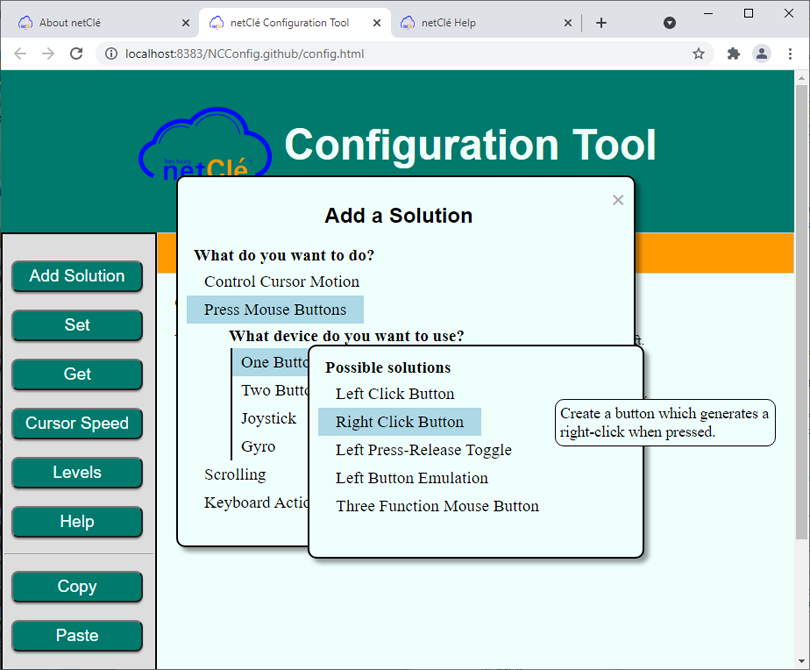
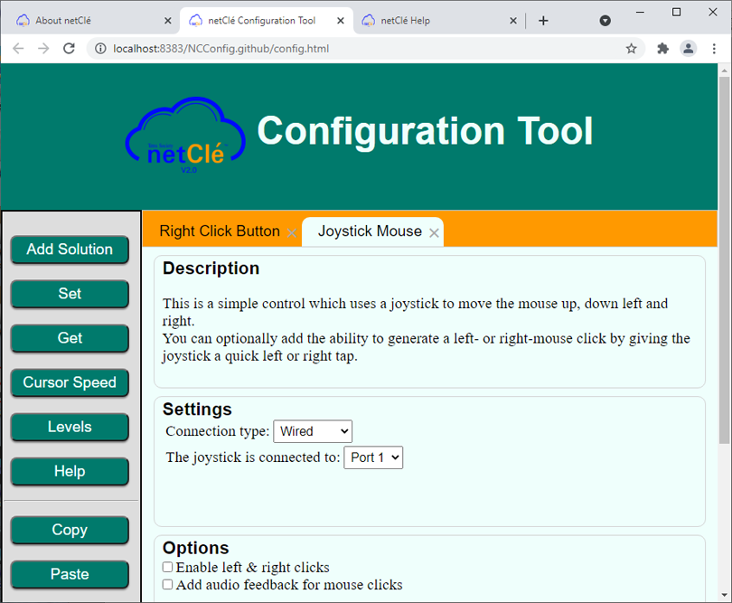
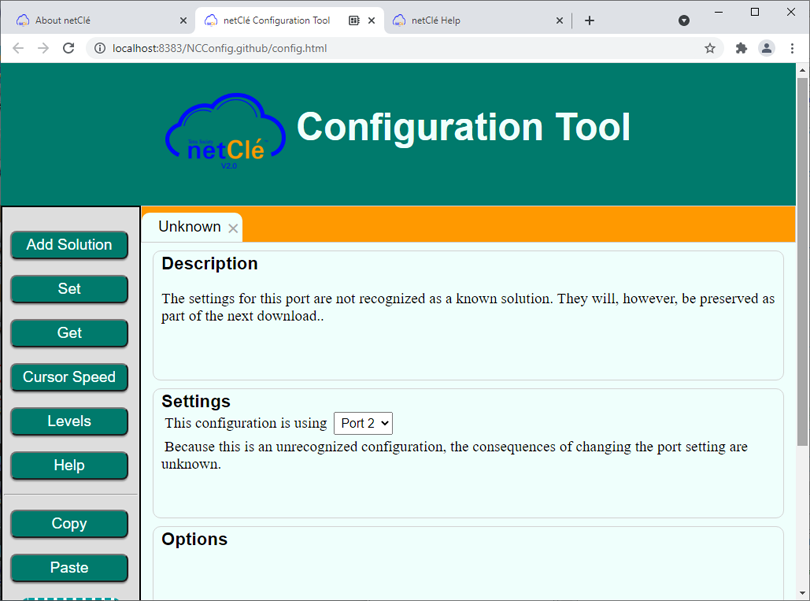
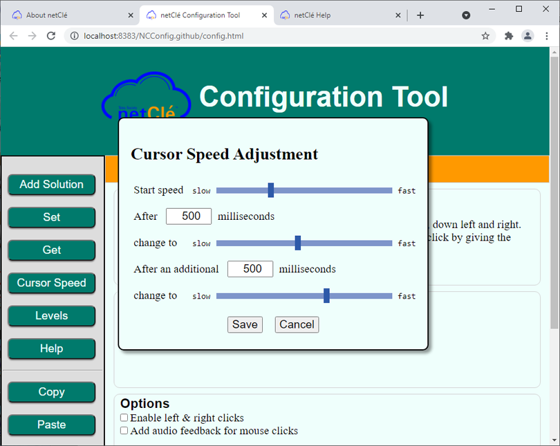
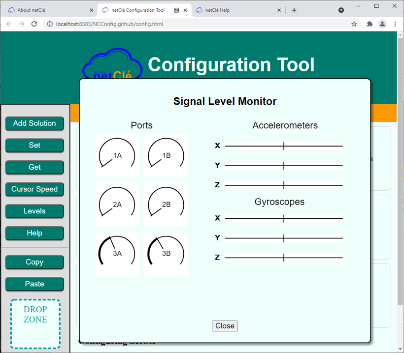

This help documentation assumes that the user has a netClé hub, appropriate peripherals and cables and that the user understands how to connect them. (Descriptions of the netClé hub hardware and peripheral can be found here.)
The netClé configuration tool is a web-based application that uses the web serial API not supported by all browsers at this time (e.g. Firefox, Safari).
Supported browsers are Chrome (this includes Chromium), Edge and Opera. To enable the web serial API it may be necessary to navigate to one of:
and set the option to 'enabled'.
To create a new configuration for your netClé open your browser (see introduction for browser requirements) and navigate to to the netClé Configuration Tool.
To create a new configuration click on the “Add Solution” button. You will be asked to select a computer function. After you select the function, you will be asked which device you wish to use for that function (typically one or two buttons or a joystick). Select a device which is appropriate for the user's ability. Finally you will be offered a list of available pre-built solutions. If you hover the cursor over a solution you will see a brief description on the right.
After you select a solution you will be presented with a screen which provides a more detailed description and allows you to make adjustments to the configuration. You can select the port to which you will connect the peripheral and for most solutions you are given the option to use a wired connection USB or a Bluetooth connection. (Note: To use the Bluetooth option you will need a Bluetooth-enabled hub.)
You may add several solutions. Typically users want a method of controlling the mouse and a method for generating mouse clicks or perhaps some special keyboard actions. Each solution you add will create a new tab. You can remove a solution by clicking on the small x on the right side of the tab.
Once you have completed your selection click on the ‘Set’ button. You will be asked to connect your netClé hub to your computer’s USB port. Once the connection is complete you should get a confirmation that the download is complete. In addition the netClé will emit two high beeps to indicate that it received the data correctly.
Try out your new configuration. If you want to adjust something or try a different solution you can make the configuration changes and then press ‘Set’ to download the adjusted configuration to the hub.
If, after using your device for a while, you want to make some adjustment to the configuration, open the configuration tool and click on ‘Get’. You will be prompted to connect your hub to your computer and when the connection is complete you should see your netClé configuration displayed.
At this point you can make adjustments (or even create a whole new configuration) and then press ‘Set’ to send that configuration to the hub.
It is easy to try out different configurations and options in order to see what works best for you.
In summary:
If you have an existing configuration that was created using an earlier configuration tool you should begin by connecting your device and pressing ‘Get’. This will load your existing configuration into the configuration tool.
The configuration tool can recognize any solution that it created, and will recognize some custom solutions built by other tools, but in many cases it will not recognize old solutions. When this is the case those solutions will be presented in a tab labeled “Unknown”.
You may add new solutions to unused ports. When you click on ‘Set’ the old configurations will be preserved. You may also choose to delete one or more ‘Unknown’ tabs (by clicking on the ‘x’ on the right edge of the tab) and replace them with a one of the pre-defined solutions. In many cases there will be a solution available in the new tool which is functionally equivalent to your old configuration. The old configuration is unrecognized only because it is slightly different in some detail.
When you use a solution which involves moving the cursor, the speed the cursor moves can be adjusted. Clicking on the ‘Cursor Speed’ button brings up a window that lets you adjust the speed. Typically it is good to have the cursor start slowly and then speed up.
When you click on ‘Set’ the cursor speed settings are sent to the hub along with the rest of the configuration. Clicking on ‘Get’ retrieves the cursor settings from the hub.
You may want to save your configuration so that you can restore it after some experimentation. Or, you may want to load a configuration sent to you by technical support or even share a configuration with other netClé users.. The Copy and Paste buttons and the area labeled Drop Zone make these actions possible.
To save a configuration click on the Copy button. You will see a message telling you that the configuration data has been copied to the clipboard. Now, open a text file or an e-mail and paste the clipboard contents into it (press control-V will do this). The pasted text is not very intelligible to a human, but it contains all the configuration details needed by netClé. Do not attempt to edit this text in any way. This will make it unreadable to netClé.
To restore a configuration you can do the opposite. In the document where the configuration was saved, highlight the configuration text and copy the text to the clipboard (control-C will do this). Then click on the Paste button. The configuration should be restored. This will restore (and replace) both the displayed configuration and the configuration on the hub. Don't worry if you highlight some additional text before or after the netClé configuration data. The loading operation will find the configuration data and ignore the rest of the text.
If you have a plain-text file (such as a notepad or wordpad file with a .txt extension) which contains a netClé configuration you can load that configuration simply by dragging the file and dropping it on the area labeled Drop Zone. This is considerably more convenient than opening the document, selecting text and then cutting and pasting. You can also drag and drop a block of text.
Clicking on the ‘Levels’ button opens a window that lets you see what the signals levels for each input are. If you have a gyroscope peripheral attached it will show you how that device reacts to motion.
This screen is useful if you suspect that one of you peripherals is malfunctioning or poorly connected.
This screen has no value beyond this trouble shooting activity.
